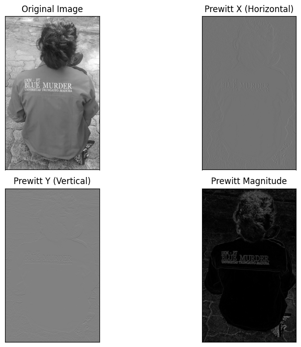
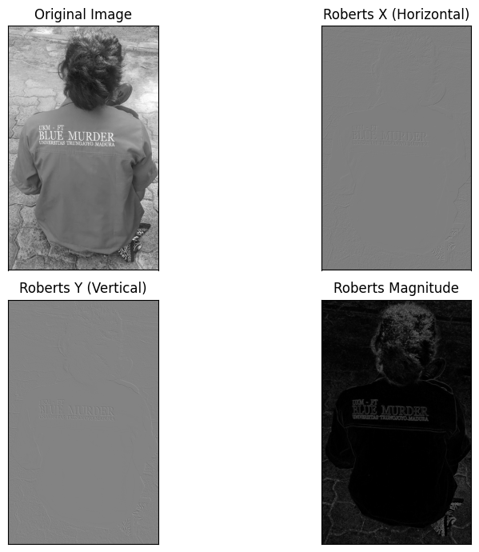
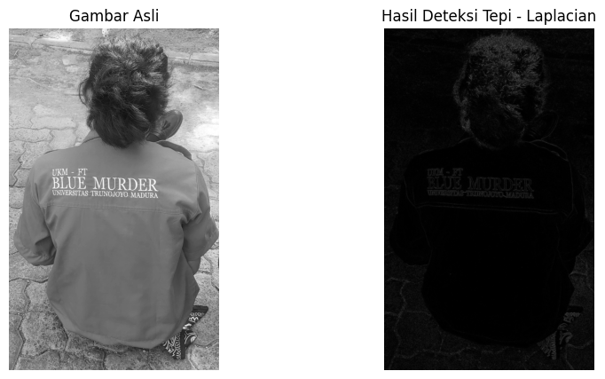
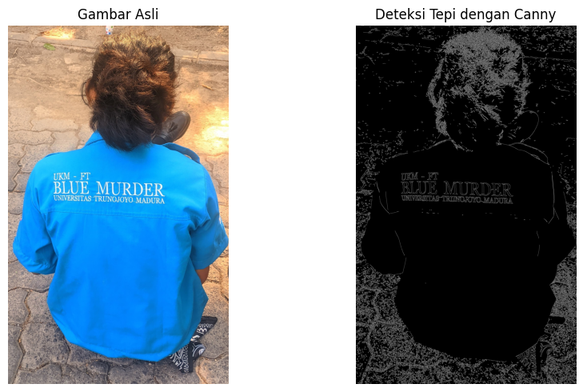
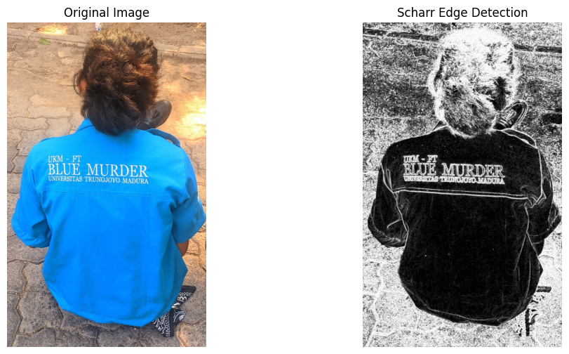
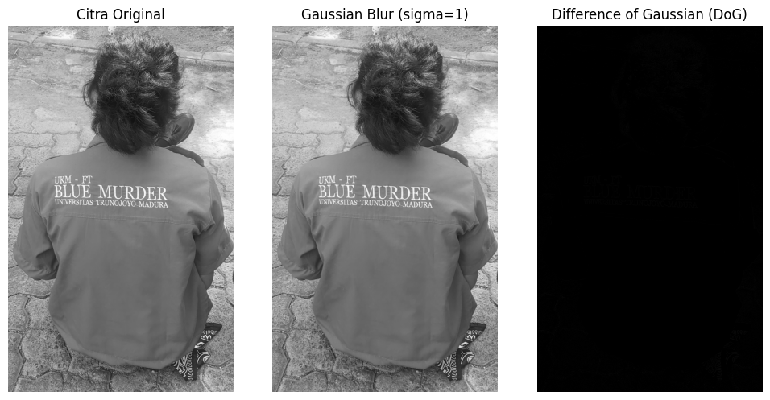
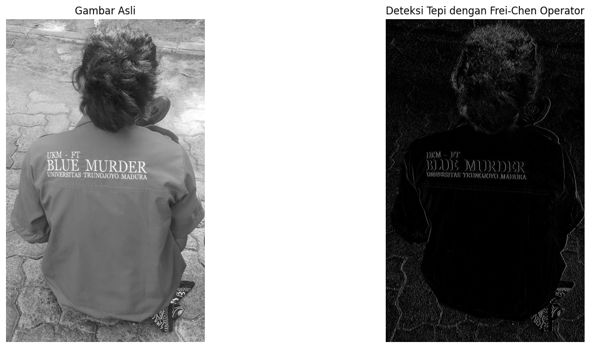
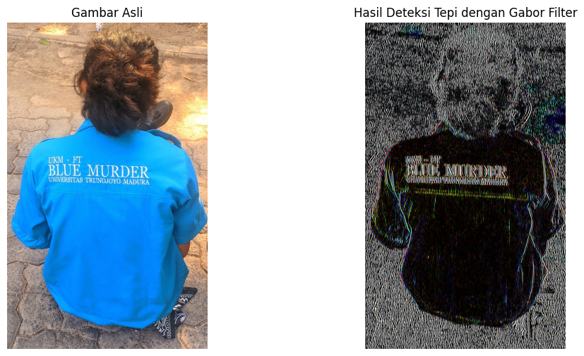
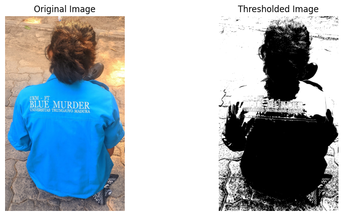

Tugas 3 : Melakukan Analisis Deteksi Tepi Pada Image Citra Digital#
NAMA : Mohammad Iqbal Surya Ramadhan
NIM : 210411100002
MATA KULIAH : Pengolahan Citra - A
Operator : Sobel#
# Mengakses Google Drive
from google.colab import drive
drive.mount('/content/drive')
import cv2
import numpy as np
import matplotlib.pyplot as plt
# Memuat gambar dari Google Drive
image = cv2.imread("/content/drive/My Drive/PCDA/report/Tugas-PCDA/BM14.jpg", cv2.IMREAD_GRAYSCALE) # Membaca gambar dalam mode grayscale
# Aplikasi Operator Sobel
sobelx = cv2.Sobel(image, cv2.CV_64F, 1, 0, ksize=5) # Deteksi tepi arah x (horizontal)
sobely = cv2.Sobel(image, cv2.CV_64F, 0, 1, ksize=5) # Deteksi tepi arah y (vertikal)
# Menghitung Sobel Magnitude (gabungan Sobel x dan y)
sobel_magnitude = cv2.magnitude(sobelx, sobely)
# Menampilkan hasil dengan Matplotlib
plt.figure(figsize=(10, 7))
# Menampilkan gambar asli
plt.subplot(2, 2, 1)
plt.imshow(image, cmap='gray')
plt.title('Original Image')
plt.xticks([]), plt.yticks([])
# Menampilkan hasil Sobel X
plt.subplot(2, 2, 2)
plt.imshow(sobelx, cmap='gray')
plt.title('Sobel X (Horizontal)')
plt.xticks([]), plt.yticks([])
# Menampilkan hasil Sobel Y
plt.subplot(2, 2, 3)
plt.imshow(sobely, cmap='gray')
plt.title('Sobel Y (Vertical)')
plt.xticks([]), plt.yticks([])
# Menampilkan hasil Sobel Magnitude (gabungan Sobel X dan Sobel Y)
plt.subplot(2, 2, 4)
plt.imshow(sobel_magnitude, cmap='gray')
plt.title('Sobel Magnitude')
plt.xticks([]), plt.yticks([])
plt.tight_layout()
plt.show()
---------------------------------------------------------------------------
KeyboardInterrupt Traceback (most recent call last)
<ipython-input-1-6bd735db4aa4> in <cell line: 0>()
1 # Mengakses Google Drive
2 from google.colab import drive
----> 3 drive.mount('/content/drive')
4
5 import cv2
/usr/local/lib/python3.11/dist-packages/google/colab/drive.py in mount(mountpoint, force_remount, timeout_ms, readonly)
98 def mount(mountpoint, force_remount=False, timeout_ms=120000, readonly=False):
99 """Mount your Google Drive at the specified mountpoint path."""
--> 100 return _mount(
101 mountpoint,
102 force_remount=force_remount,
/usr/local/lib/python3.11/dist-packages/google/colab/drive.py in _mount(mountpoint, force_remount, timeout_ms, ephemeral, readonly)
135 )
136 if ephemeral:
--> 137 _message.blocking_request(
138 'request_auth',
139 request={'authType': 'dfs_ephemeral'},
/usr/local/lib/python3.11/dist-packages/google/colab/_message.py in blocking_request(request_type, request, timeout_sec, parent)
174 request_type, request, parent=parent, expect_reply=True
175 )
--> 176 return read_reply_from_input(request_id, timeout_sec)
/usr/local/lib/python3.11/dist-packages/google/colab/_message.py in read_reply_from_input(message_id, timeout_sec)
94 reply = _read_next_input_message()
95 if reply == _NOT_READY or not isinstance(reply, dict):
---> 96 time.sleep(0.025)
97 continue
98 if (
KeyboardInterrupt:
Operator : Prewitt#
# Mengakses Google Drive
from google.colab import drive
drive.mount('/content/drive')
import cv2
import numpy as np
import matplotlib.pyplot as plt
# Memuat gambar dari Google Drive
image = cv2.imread("/content/drive/My Drive/PCDA/report/Tugas-PCDA/BM14.jpg", cv2.IMREAD_GRAYSCALE) # Membaca gambar dalam mode grayscale
# Operator Prewitt
prewitt_x = np.array([[ -1, 0, 1],
[ -1, 0, 1],
[ -1, 0, 1]])
prewitt_y = np.array([[ 1, 1, 1],
[ 0, 0, 0],
[-1, -1, -1]])
# Menerapkan filter Prewitt
sobelx = cv2.filter2D(image, cv2.CV_64F, prewitt_x) # Deteksi tepi arah x (horizontal)
sobely = cv2.filter2D(image, cv2.CV_64F, prewitt_y) # Deteksi tepi arah y (vertikal)
# Menghitung magnitude
prewitt_magnitude = cv2.magnitude(sobelx, sobely)
# Menampilkan hasil dengan Matplotlib
plt.figure(figsize=(10, 7))
# Menampilkan gambar asli
plt.subplot(2, 2, 1)
plt.imshow(image, cmap='gray')
plt.title('Original Image')
plt.xticks([]), plt.yticks([])
# Menampilkan hasil Prewitt X
plt.subplot(2, 2, 2)
plt.imshow(sobelx, cmap='gray')
plt.title('Prewitt X (Horizontal)')
plt.xticks([]), plt.yticks([])
# Menampilkan hasil Prewitt Y
plt.subplot(2, 2, 3)
plt.imshow(sobely, cmap='gray')
plt.title('Prewitt Y (Vertical)')
plt.xticks([]), plt.yticks([])
# Menampilkan hasil Prewitt Magnitude (gabungan Prewitt X dan Prewitt Y)
plt.subplot(2, 2, 4)
plt.imshow(prewitt_magnitude, cmap='gray')
plt.title('Prewitt Magnitude')
plt.xticks([]), plt.yticks([])
plt.tight_layout()
plt.show()
Drive already mounted at /content/drive; to attempt to forcibly remount, call drive.mount("/content/drive", force_remount=True).

Operator : Roberts Cross#
# Mengakses Google Drive
from google.colab import drive
drive.mount('/content/drive')
import cv2
import numpy as np
import matplotlib.pyplot as plt
# Memuat gambar dari Google Drive
image = cv2.imread("/content/drive/My Drive/PCDA/report/Tugas-PCDA/BM14.jpg", cv2.IMREAD_GRAYSCALE) # Membaca gambar dalam mode grayscale
# Definisi operator Roberts Cross
def roberts_cross(image):
# Operator Roberts
kernel_x = np.array([[1, 0], [0, -1]], dtype=np.float32) # Kernel untuk deteksi tepi arah x
kernel_y = np.array([[0, 1], [-1, 0]], dtype=np.float32) # Kernel untuk deteksi tepi arah y
# Aplikasi kernel pada gambar
edges_x = cv2.filter2D(image, cv2.CV_64F, kernel_x)
edges_y = cv2.filter2D(image, cv2.CV_64F, kernel_y)
# Menghitung magnitude
edges_magnitude = cv2.magnitude(edges_x, edges_y)
return edges_x, edges_y, edges_magnitude
# Menggunakan operator Roberts untuk mendapatkan tepi
roberts_x, roberts_y, roberts_magnitude = roberts_cross(image)
# Menampilkan hasil dengan Matplotlib
plt.figure(figsize=(10, 7))
# Menampilkan gambar asli
plt.subplot(2, 2, 1)
plt.imshow(image, cmap='gray')
plt.title('Original Image')
plt.xticks([]), plt.yticks([])
# Menampilkan hasil Roberts X
plt.subplot(2, 2, 2)
plt.imshow(roberts_x, cmap='gray')
plt.title('Roberts X (Horizontal)')
plt.xticks([]), plt.yticks([])
# Menampilkan hasil Roberts Y
plt.subplot(2, 2, 3)
plt.imshow(roberts_y, cmap='gray')
plt.title('Roberts Y (Vertical)')
plt.xticks([]), plt.yticks([])
# Menampilkan hasil Roberts Magnitude
plt.subplot(2, 2, 4)
plt.imshow(roberts_magnitude, cmap='gray')
plt.title('Roberts Magnitude')
plt.xticks([]), plt.yticks([])
plt.tight_layout()
plt.show()
Drive already mounted at /content/drive; to attempt to forcibly remount, call drive.mount("/content/drive", force_remount=True).

Operator : Laplacian#
# Mengakses Google Drive
from google.colab import drive
drive.mount('/content/drive')
# Mengimpor pustaka yang diperlukan
import cv2
import matplotlib.pyplot as plt
# Memuat gambar dari Google Drive
image = cv2.imread("/content/drive/My Drive/PCDA/report/Tugas-PCDA/BM14.jpg", cv2.IMREAD_GRAYSCALE)
# Menerapkan operator Laplacian
laplacian = cv2.Laplacian(image, cv2.CV_64F)
# Menghitung magnitudo dari hasil Laplacian
laplacian_magnitude = cv2.convertScaleAbs(laplacian)
# Menampilkan gambar asli dan hasil deteksi tepi
plt.figure(figsize=(10, 5))
plt.subplot(1, 2, 1)
plt.imshow(image, cmap='gray')
plt.title('Original Image')
plt.axis('off')
plt.subplot(1, 2, 2)
plt.imshow(laplacian_magnitude, cmap='gray')
plt.title('Hasil Deteksi Tepi - Laplacian')
plt.axis('off')
plt.show()
Drive already mounted at /content/drive; to attempt to forcibly remount, call drive.mount("/content/drive", force_remount=True).

Operator : Canny#
# Mengimpor pustaka yang diperlukan
import cv2
import matplotlib.pyplot as plt
from google.colab import drive
# Mengakses Google Drive
drive.mount('/content/drive')
# Memuat gambar dari Google Drive
image_path = "/content/drive/My Drive/PCDA/report/Tugas-PCDA/BM14.jpg"
image = cv2.imread(image_path)
# Mengonversi gambar dari BGR ke grayscale untuk deteksi tepi
image_gray = cv2.cvtColor(image, cv2.COLOR_BGR2GRAY)
# Melakukan deteksi tepi menggunakan operator Canny
edges = cv2.Canny(image_gray, 100, 200)
# Menampilkan gambar asli dan hasil deteksi tepi
plt.figure(figsize=(10, 5))
# Gambar asli dalam RGB
plt.subplot(1, 2, 1)
plt.title('Gambar Asli')
plt.imshow(cv2.cvtColor(image, cv2.COLOR_BGR2RGB))
plt.axis('off')
# Hasil deteksi tepi
plt.subplot(1, 2, 2)
plt.title('Deteksi Tepi dengan Canny')
plt.imshow(edges, cmap='gray')
plt.axis('off')
plt.tight_layout()
plt.show()
Drive already mounted at /content/drive; to attempt to forcibly remount, call drive.mount("/content/drive", force_remount=True).

Operator : Scharr#
# Import necessary libraries
import cv2
import numpy as np
import matplotlib.pyplot as plt
# Load the image from Google Drive
image_path = '/content/drive/My Drive/PCDA/report/Tugas-PCDA/BM14.jpg'
image = cv2.imread(image_path) # Read the image in color
# Convert the image to grayscale if needed
gray_image = cv2.cvtColor(image, cv2.COLOR_BGR2GRAY)
# Apply the Scharr operator
scharr_x = cv2.Scharr(gray_image, cv2.CV_64F, 1, 0) # Derivative in x direction
scharr_y = cv2.Scharr(gray_image, cv2.CV_64F, 0, 1) # Derivative in y direction
scharr_magnitude = np.sqrt(scharr_x**2 + scharr_y**2) # Combine both derivatives
# Convert to uint8
scharr_magnitude = np.uint8(np.clip(scharr_magnitude, 0, 255))
# Display the original image and the Scharr edge detection result
plt.figure(figsize=(12, 6))
plt.subplot(1, 2, 1)
plt.title('Original Image')
plt.imshow(cv2.cvtColor(image, cv2.COLOR_BGR2RGB)) # Convert BGR to RGB for correct display
plt.axis('off')
plt.subplot(1, 2, 2)
plt.title('Scharr Edge Detection')
plt.imshow(scharr_magnitude, cmap='gray')
plt.axis('off')
plt.show()

Operator : Difference of Gaussian (DoG)#
# Mengimpor library yang diperlukan
import cv2
import numpy as np
import matplotlib.pyplot as plt
# Membaca citra dari Google Drive
image_path = '/content/drive/My Drive/PCDA/report/Tugas-PCDA/BM14.jpg' # Ganti dengan jalur citra Anda
image = cv2.imread(image_path, cv2.IMREAD_GRAYSCALE)
# Mengonversi citra ke format RGB
image_rgb = cv2.cvtColor(image, cv2.COLOR_BGR2RGB)
# Menerapkan Gaussian Blur dengan dua sigma yang berbeda
sigma1 = 1.0
sigma2 = 2.0
# Gaussian Blur
blurred1 = cv2.GaussianBlur(image_rgb, (5, 5), sigma1)
blurred2 = cv2.GaussianBlur(image_rgb, (5, 5), sigma2)
# Menghitung Difference of Gaussian (DoG)
dog = cv2.subtract(blurred1, blurred2)
# Menampilkan hasil
plt.figure(figsize=(10, 5))
# Citra original
plt.subplot(1, 3, 1)
plt.title('Citra Original')
plt.imshow(image_rgb)
plt.axis('off')
# Citra Gaussian Blur (sigma1)
plt.subplot(1, 3, 2)
plt.title('Gaussian Blur (sigma=1)')
plt.imshow(blurred1)
plt.axis('off')
# Citra DoG
plt.subplot(1, 3, 3)
plt.title('Difference of Gaussian (DoG)')
plt.imshow(dog)
plt.axis('off')
plt.tight_layout()
plt.show()

Operator : Kirsch Compass#
pip install opencv-python matplotlib
Requirement already satisfied: opencv-python in /usr/local/lib/python3.10/dist-packages (4.10.0.84)
Requirement already satisfied: matplotlib in /usr/local/lib/python3.10/dist-packages (3.7.1)
Requirement already satisfied: numpy>=1.21.2 in /usr/local/lib/python3.10/dist-packages (from opencv-python) (1.26.4)
Requirement already satisfied: contourpy>=1.0.1 in /usr/local/lib/python3.10/dist-packages (from matplotlib) (1.3.0)
Requirement already satisfied: cycler>=0.10 in /usr/local/lib/python3.10/dist-packages (from matplotlib) (0.12.1)
Requirement already satisfied: fonttools>=4.22.0 in /usr/local/lib/python3.10/dist-packages (from matplotlib) (4.54.1)
Requirement already satisfied: kiwisolver>=1.0.1 in /usr/local/lib/python3.10/dist-packages (from matplotlib) (1.4.7)
Requirement already satisfied: packaging>=20.0 in /usr/local/lib/python3.10/dist-packages (from matplotlib) (24.1)
Requirement already satisfied: pillow>=6.2.0 in /usr/local/lib/python3.10/dist-packages (from matplotlib) (10.4.0)
Requirement already satisfied: pyparsing>=2.3.1 in /usr/local/lib/python3.10/dist-packages (from matplotlib) (3.1.4)
Requirement already satisfied: python-dateutil>=2.7 in /usr/local/lib/python3.10/dist-packages (from matplotlib) (2.8.2)
Requirement already satisfied: six>=1.5 in /usr/local/lib/python3.10/dist-packages (from python-dateutil>=2.7->matplotlib) (1.16.0)
import cv2
import numpy as np
import matplotlib.pyplot as plt
# Membaca gambar dari file
image_path = "/content/drive/My Drive/PCDA/report/Tugas-PCDA/BM14.jpg" # Ganti dengan jalur gambar Anda
original_image = cv2.imread(image_path, cv2.IMREAD_GRAYSCALE)
# Definisi operator Kirsch
kirsch_masks = [
np.array([[5, 5, 5],
[-3, 0, -3],
[-3, -3, -3]]), # 0 derajat
np.array([[5, 5, -3],
[5, 0, -3],
[-3, -3, -3]]), # 45 derajat
np.array([[5, -3, -3],
[5, 0, -3],
[5, -3, -3]]), # 90 derajat
np.array([[-3, -3, -3],
[5, 0, -3],
[5, 5, -3]]), # 135 derajat
]
# Fungsi untuk menerapkan mask Kirsch
def apply_kirsch_operator(image, masks):
max_response = np.zeros(image.shape)
for mask in masks:
response = cv2.filter2D(image, -1, mask)
max_response = np.maximum(max_response, response)
return max_response
# Menerapkan operator Kirsch pada gambar
edges = apply_kirsch_operator(original_image, kirsch_masks)
# Menampilkan gambar asli dan hasil deteksi tepi
plt.figure(figsize=(10, 5))
plt.subplot(1, 2, 1)
plt.title('Gambar Asli')
plt.imshow(original_image, cmap='gray')
plt.axis('off')
plt.subplot(1, 2, 2)
plt.title('Deteksi Tepi Kirsch')
plt.imshow(edges, cmap='gray')
plt.axis('off')
plt.show()
Operator : Frei-Chen Operator#
import numpy as np
import cv2
import matplotlib.pyplot as plt
# Mengatur tampilan gambar
%matplotlib inline
# Menghubungkan ke Google Drive
from google.colab import drive
drive.mount('/content/drive')
# Ganti dengan path gambar Anda
image_path = '/content/drive/My Drive/PCDA/report/Tugas-PCDA/BM14.jpg'
image = cv2.imread(image_path, cv2.IMREAD_GRAYSCALE)
# Menampilkan gambar asli
plt.figure(figsize=(10, 10))
plt.imshow(image, cmap='gray')
plt.title('Gambar Asli')
plt.axis('off')
plt.show()
# Definisikan Frei-Chen Operator
frei_chen_kernel = np.array([[ -1, 0, 1],
[-np.sqrt(2), 0, np.sqrt(2)],
[ -1, 0, 1]])
# Menerapkan konvolusi menggunakan Frei-Chen Operator
edges = cv2.filter2D(image, -1, frei_chen_kernel)
# Menampilkan hasil deteksi tepi
plt.figure(figsize=(10, 10))
plt.imshow(edges, cmap='gray')
plt.title('Hasil Deteksi Tepi dengan Frei-Chen Operator')
plt.axis('off')
plt.show()
# Menampilkan gambar asli dan hasil deteksi tepi bersamaan
plt.figure(figsize=(15, 7))
# Menampilkan gambar asli
plt.subplot(1, 2, 1)
plt.imshow(image, cmap='gray')
plt.title('Gambar Asli')
plt.axis('off')
# Menampilkan hasil deteksi tepi
plt.subplot(1, 2, 2)
plt.imshow(edges, cmap='gray')
plt.title('Deteksi Tepi dengan Frei-Chen Operator')
plt.axis('off')
plt.show()
Drive already mounted at /content/drive; to attempt to forcibly remount, call drive.mount("/content/drive", force_remount=True).

Operator : Gabor Filter#
import cv2
import numpy as np
import matplotlib.pyplot as plt
# Fungsi untuk menerapkan Gabor Filter
def gabor_filter(image, kernel_size=21, sigma=5, theta=0, lambd=10, gamma=0.5):
# Membuat Gabor filter
gabor_kernel = cv2.getGaborKernel((kernel_size, kernel_size), sigma, theta, lambd, gamma, 0, ktype=cv2.CV_32F)
# Menerapkan filter pada citra
filtered_image = cv2.filter2D(image, cv2.CV_8UC3, gabor_kernel)
return filtered_image
# Membaca citra
image_path = '/content/drive/My Drive/PCDA/report/Tugas-PCDA/BM14.jpg' # Ganti dengan jalur gambar Anda
original_image = cv2.imread(image_path)
original_image = cv2.cvtColor(original_image, cv2.COLOR_BGR2RGB) # Mengubah warna ke RGB
# Menerapkan Gabor Filter
filtered_image = gabor_filter(original_image)
# Menampilkan gambar asli dan hasil deteksi tepi
plt.figure(figsize=(12, 6))
plt.subplot(1, 2, 1)
plt.imshow(original_image)
plt.title('Gambar Asli')
plt.axis('off')
plt.subplot(1, 2, 2)
plt.imshow(filtered_image)
plt.title('Hasil Deteksi Tepi dengan Gabor Filter')
plt.axis('off')
plt.show()

Operator : Treshold#
# Step 1: Install the required libraries (if not already installed)
!pip install opencv-python matplotlib
# Step 2: Import the necessary libraries
import cv2
import matplotlib.pyplot as plt
# Step 3: Read the image
image_path = '/content/drive/My Drive/PCDA/report/Tugas-PCDA/BM14.jpg' # Ganti dengan path gambar Anda
image = cv2.imread(image_path)
# Step 4: Convert to grayscale
gray_image = cv2.cvtColor(image, cv2.COLOR_BGR2GRAY)
# Step 5: Apply threshold
_, threshold_image = cv2.threshold(gray_image, 127, 255, cv2.THRESH_BINARY)
# Step 6: Display the original image and the thresholded image
plt.figure(figsize=(10, 5))
# Original Image
plt.subplot(1, 2, 1)
plt.imshow(cv2.cvtColor(image, cv2.COLOR_BGR2RGB))
plt.title('Original Image')
plt.axis('off')
# Threshold Image
plt.subplot(1, 2, 2)
plt.imshow(threshold_image, cmap='gray')
plt.title('Thresholded Image')
plt.axis('off')
plt.show()
Requirement already satisfied: opencv-python in /usr/local/lib/python3.10/dist-packages (4.10.0.84)
Requirement already satisfied: matplotlib in /usr/local/lib/python3.10/dist-packages (3.7.1)
Requirement already satisfied: numpy>=1.21.2 in /usr/local/lib/python3.10/dist-packages (from opencv-python) (1.26.4)
Requirement already satisfied: contourpy>=1.0.1 in /usr/local/lib/python3.10/dist-packages (from matplotlib) (1.3.0)
Requirement already satisfied: cycler>=0.10 in /usr/local/lib/python3.10/dist-packages (from matplotlib) (0.12.1)
Requirement already satisfied: fonttools>=4.22.0 in /usr/local/lib/python3.10/dist-packages (from matplotlib) (4.54.1)
Requirement already satisfied: kiwisolver>=1.0.1 in /usr/local/lib/python3.10/dist-packages (from matplotlib) (1.4.7)
Requirement already satisfied: packaging>=20.0 in /usr/local/lib/python3.10/dist-packages (from matplotlib) (24.1)
Requirement already satisfied: pillow>=6.2.0 in /usr/local/lib/python3.10/dist-packages (from matplotlib) (10.4.0)
Requirement already satisfied: pyparsing>=2.3.1 in /usr/local/lib/python3.10/dist-packages (from matplotlib) (3.1.4)
Requirement already satisfied: python-dateutil>=2.7 in /usr/local/lib/python3.10/dist-packages (from matplotlib) (2.8.2)
Requirement already satisfied: six>=1.5 in /usr/local/lib/python3.10/dist-packages (from python-dateutil>=2.7->matplotlib) (1.16.0)
